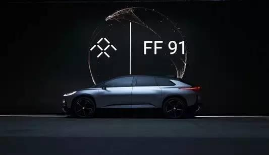
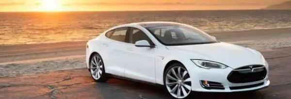
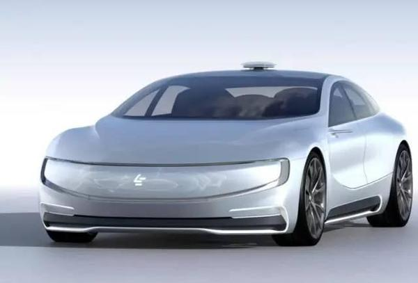
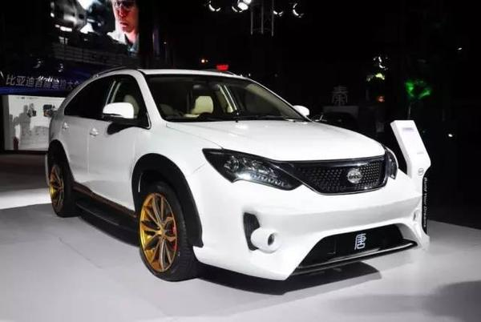

新能源汽车是未来趋势，而电动汽车则是目前能够快速实现量产的一类！然而，趋势和现实之间隔了一道纱帘，隐隐约约又琢磨不透，造车路上比拼的是勇气、决心、生态体系，而并不仅仅是资本。因为处于黎明前的黑暗，互联网造车必然要经历坎坷（比如乐视的财务危机、比亚迪腾势的尴尬都是磨难）。

已经上路的比没有消息的更值得尊敬和看好，因为曝光了的都是可以见光的，而没有上路的则很多是虚无缥缈中，我们建议要坚决停掉一些玩票项目，不是项目不靠谱而是双线作战真的会拖垮你（大多数企业没有贾跃亭的毅力和决心，也没有比亚迪的根基）。

几乎很少有人注意到，所有的互联网造车都在采用双品牌运作（比如乐视系的-FF和LeSEE；蔚来系的-蔚来和车和家；和谐富腾系的-FMC和爱驰（最初还叫爱车现在为爱驰）；就是比亚迪也搞出来了比亚迪和腾势），这其中蕴含着理想与现实的差距，也可以看出互联网企业在电动车高低发展路径和方向上的举棋不定。

?蔚来汽车首款超跑EP9
在市场是特斯拉还是比亚迪赢得未来没有定论的时候，双品牌目的就是给自己买保险，反正总有一扇门会打开，当打开的时候在里面就不会输，这或许是互联网造车运作的逻辑。但这无异于风险投资，在双品牌对抗风险的同时，也恰恰使自己处于更大的风险之中。原因是双线运作的人力、财力和精力成本会使企业很快透支，且筋疲力尽。乐视汽车最近的危机可以说就恰恰源于双品牌运作到来的巨大压力。

?和谐富腾汽车（和谐汽车+富士康+腾讯）
对于许多从事汽车行业的人来说对造车都有一种敬畏心里，因为造车的流程、供应商体系以及研发数据库等等都是非常庞大而系统化的工程，这个不是说谁想要做就能做的，否则全球不可能只有少数国家有汽车工业（这也是谷歌和苹果都最终放弃造车的原因）。不过，正所谓初生牛犊不怕虎，中国的互联网公司作为门外汉并不觉得造车有多难，相反，在他们的眼里，汽车真的只是装有四个轱辘能跑的交通工具而已，他们更关心的往往是搭载在车上的人机交互系统。

从近几年国内各大互联网巨头纷纷加入到互联网造车的热潮中，我们可以感觉到中国的这批互联网新贵们渴望更大的舞台，渴望更雄厚的境界实力，而电动车实际上比传统汽车要简单，因此他们愿意冒险，因为一旦成功就变成了名利双手的实业家。然而造电动车简单，可是要说服市场买单确实一个难题，而且方向不明，高开高走的特斯拉虽然有了名声，但实际上亏损了很多年，要是后来者单走高开高走，这么亏，恐怕承受不起啊。而走经济民用路线的比亚迪汽车和北汽新能源汽车，实际上都靠政策支撑，而且在大众心中目前并没有建立口碑，对最在乎形象最具忽悠能力的互联网新贵们来说这条路也不是他们喜欢的。


?特斯拉首款量产车型为Roadster跑车但成功的却是四门轿跑的MODEL S
中国的互联网造车虽然名义上都是打着挑战特斯拉旗号，其实背地里又是另外一种想法，因为特斯拉可以赌，而中国蜂拥而至的互联网造车却容不得长期亏损，所以都是特斯拉+比亚迪高低双线战略。

乐视的战略FF和LeSEE一高一低两个项目，目前只能硬着头皮上，顶过去一定会一片光明（但他和比亚迪算是最靠谱的一类，原因是乐视早已经有超级电视和手机的制造经验，这充分说明乐视及其创始人贾跃亭并不只是能说会道的资本忽悠家，他是自己真投钱，全心全力压上身家性命的干，所谓哀兵必胜，冲这一点他也比和谐富腾和蔚来系更加靠谱）。

比亚迪和腾势，未来看还是要舍弃一个，品牌可以保留，但运作和渠道还是融为一体比较合适。蔚来和车和家，我看李斌和李想还要多琢磨琢磨，对于没有任何制造业经验的他们来说两个项目同时上马风险过大，还是选择一个比较好。至于戴雷和付强所在的和谐富腾系FMC和爱驰，资本方已经有了不利因素，建议还是想办法合二为一为好。

总结：高端和低端通吃，这也许是一个车企最希望看到的，一个可以通过较高的溢价能力获得丰厚的利润，同时还能提升自身的品牌价值，而低端则可以实现规模生产，迅速提高自身的市场占有率。

然而中国互联网车企们最大的问题是出发点太理想化和太功利主义。海外的高端品牌帕加尼、科尼塞克说白了都是富人们为了满足自己的个性化需求打造的，没有那么强的功利性，而中国的高端车项目，清一色的选择超跑，且不说传统超跑除了法拉利，基本都是亏损的，单就市场需求，中国有这么多特例独行的高端人群吗？显然是没有，你看宝马i8的销量也很有限，人家还是全球公认的百年豪华品牌。

如果要高端是不是该打造出一款纯电动宝马760Li和S65AMG这样的宜商宜家的车靠谱呢？何况特斯拉首款量产车型为Roadster跑车但成功的却是四门轿跑的MODEL S，早已经验证了实用的耍帅才是王道。所以互联网造车的高端项目一定要调整方向，这一点乐视的贾跃亭倒是转的很快，FF首款量产车和此前的概念车有很大不同，FF 91，尽管这车的性能达到了全球最快的从0到96公里/每小时加速2.39秒但它首先是款实用的跨界轿车。
- 推荐图文
- 推荐人物
- 推荐企业